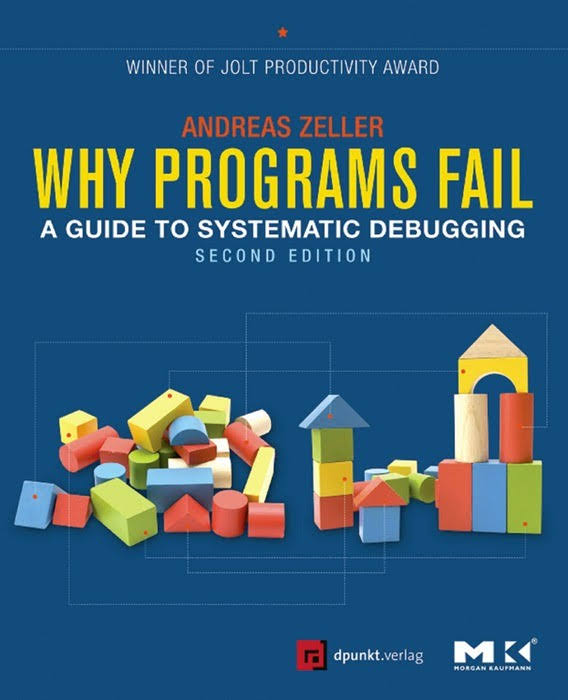
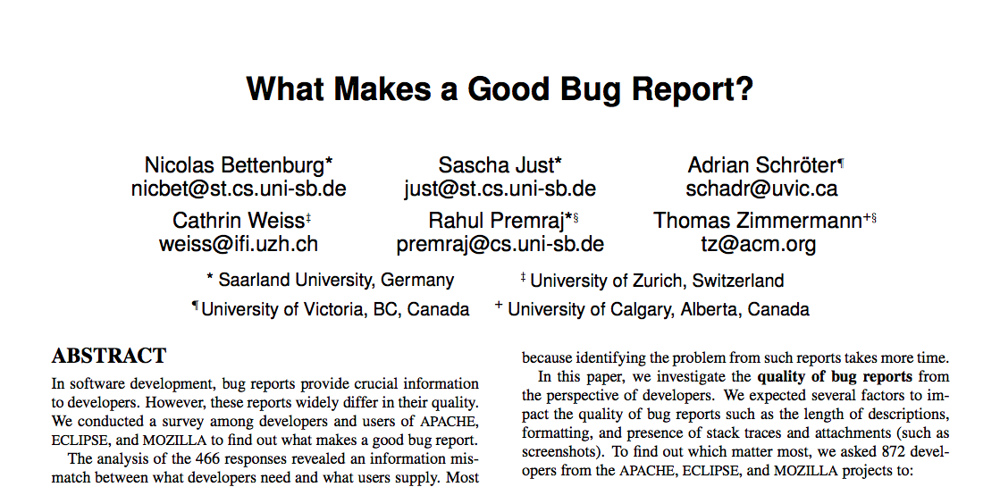

2-unit CS elective course
Pre-requisite: 2 courses in programming
Assumed that you can pick up a language on your own
Assumed that you can learn an IDE quickly
Assumed that have a mental model of a CPU (memory, registers, etc.)
You should:
Be very comfortable with programming (in at least one language)
Bring your own laptop (Mac/Windows/Linux)
Be familiar with Linux
Review slides and materials after the class
Expect to spend at least 10 hours per week
Spent 15 years building computer systems (microprocessors, hardware, compilers)
Subsequently worked in HCI (ish) fields
Based out of Bangalore where I lead a startup (Amuse Labs) and work on puzzle products used by global publishers
Associated with Ashoka CS and Trivedi Center for Political Data from the beginning (2013)
Not required coursework in any CS curriculum
No systematic training or certification
Hardly any standard textbooks or reference materials
A significant portion of a professional programmer's time is spent on debugging (their own or others' programs)
Debugging skills often limit the complexity of things you can build
Higher pay for on-call engineers who can troubleshoot problems
Many good ideas in research... but relatively few are used in practice
(However, striking contrast between hardware and software)
"printf debugging" is still widely prevalent (more on this later)
Debuggers of today are not that different from dbx on VAX/Ultrix and TurboC ~ 30 years ago!
Much low-hanging fruit
e.g. at the intersection of hardware and software
Real-world impact
Huge cost of bugs: $59bn est. in 2005, much higher now
Lots of novelty and innovation possible
Take X, the latest trend.
Debugging X is bound to be of interest and value
Example: debugging memory management
Example: debugging software defined networks
Example: debugging AI systems
Reed Hastings, CEO/founder of Netflix ...
... and Pure Software
I believe there is 3X differential between good and bad debuggers/programmers. (Similar to doctors)
Could be due to cognitive differences: The way you think about the program (research needed!)
Great tools do not necessarily make us great at debugging
Debugging is a skill that makes for a "real" computer scientist
Enjoy the chase of a bug (like detective work)
Many of our most memorable professional memories are of tricky, hard to find bugs and what they taught us
Realize that debugging is a necessary CS skill
Learn to think systematically about debugging
Become expert at using debugging tools
Think about writing your own debugging tools
Think about design for debug in your programs
Get some exposure to research in debugging
Understand basics of hardware debugging (if time permits)
ICSE, ISSTA
PLDI, FSE/ESEC
OOPSLA, SPLASH, ECOOP
CHI
MSR
SP&E (Software Practice and Experience)
IEEE Transactions on Software Engineering (TSE)
Classes held every Th-F 3-4.30pm
(Tentative) Alternate weeks on Zoom
TAs: Akshat Singh, Soham De
Office hours: SH: Thursdays 6-7pm in my office (AC04 7th floor) or on Zoom
Office hours: AS: Wed 5-6pm, SD: Mon 6-7pm
Use cs2422-staff@ashoka.edu.in for all matters related to this course
Add/drop/course enrolment rules per OAA
Course website: (Not live yet)
Total points: 200
Attendance: 60 points
Assignments: 80 points (Presentations and paper reviews)
Final exam: 60 points (date TBD, but after Holi?)
Will start at 3.05 pm Th-F
Stay until the end for attendance credit
When in class: Drinks ok. In-classroom dining not ok!
Mobile phones must be off or silent
Leads directly to F grade.
When in doubt if something is ok, ask
Why Programs Fail
by Andreas Zeller
Maintain a bug log (online or offline) for the rest of this semester
Track at least Project, Bug summary, Date, How found, How fixed, Tags
Submit at the time of the final
Expect to see at least 10 bug reports per person
Borrow your friends' bugs if you have to
(But you must understand the bug completely. No repeats.)
Review the paper "What Makes a Good Bug Report?" by Bettenburg et al (FSE 2008)
Guideline: About 500 words. Summarize the paper in the first 2 paragraphs, then give your reactions to it (what you like and don't like about the work) as if you were going to decide whether to accept the paper for publication. Due before class next Friday, Feb. 3 in Google classroom. 